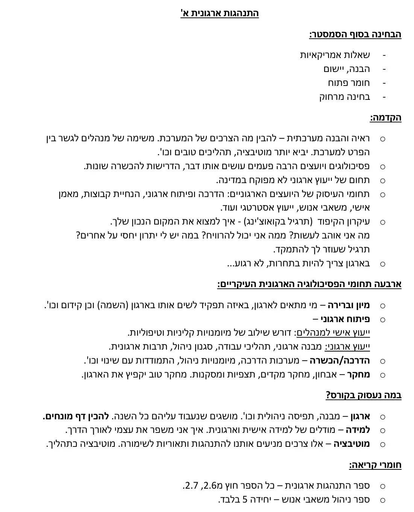
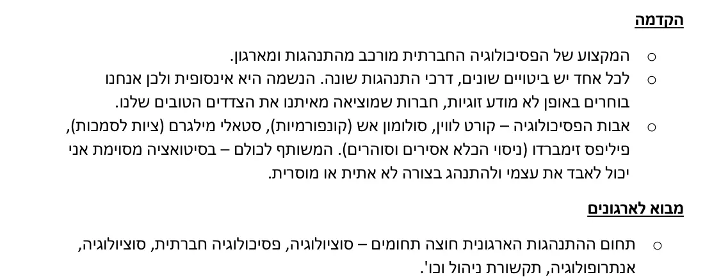
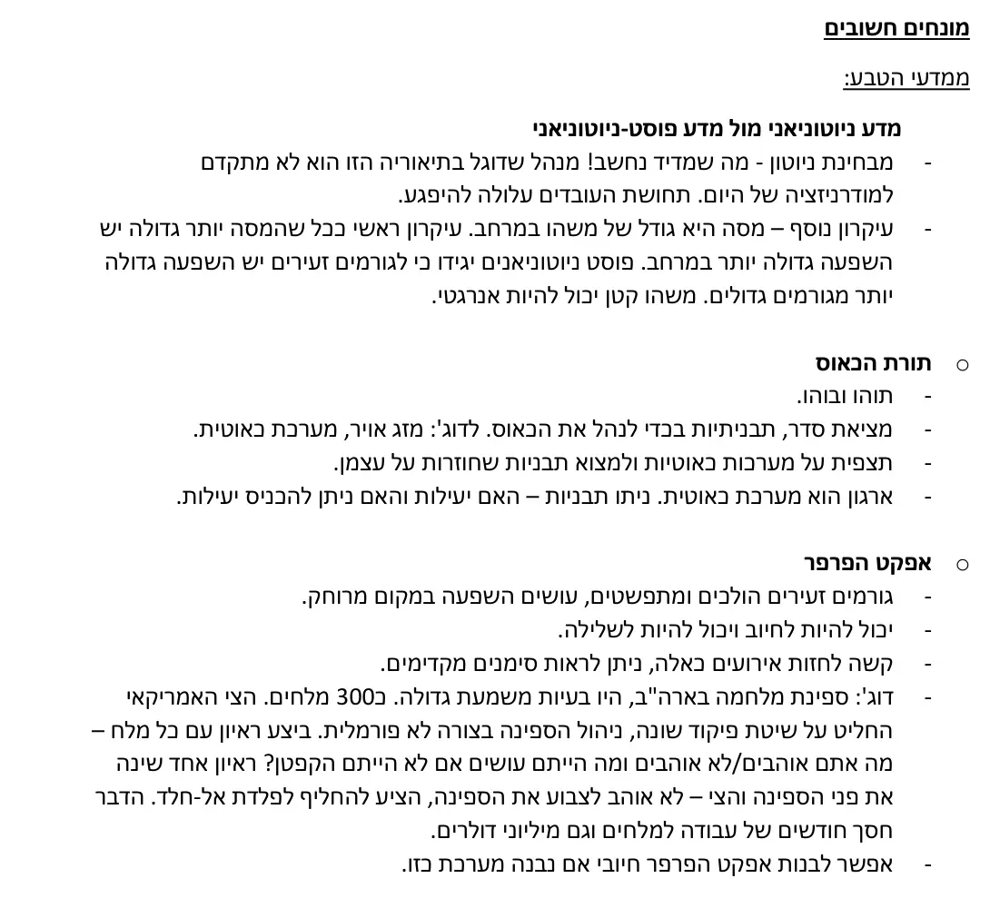
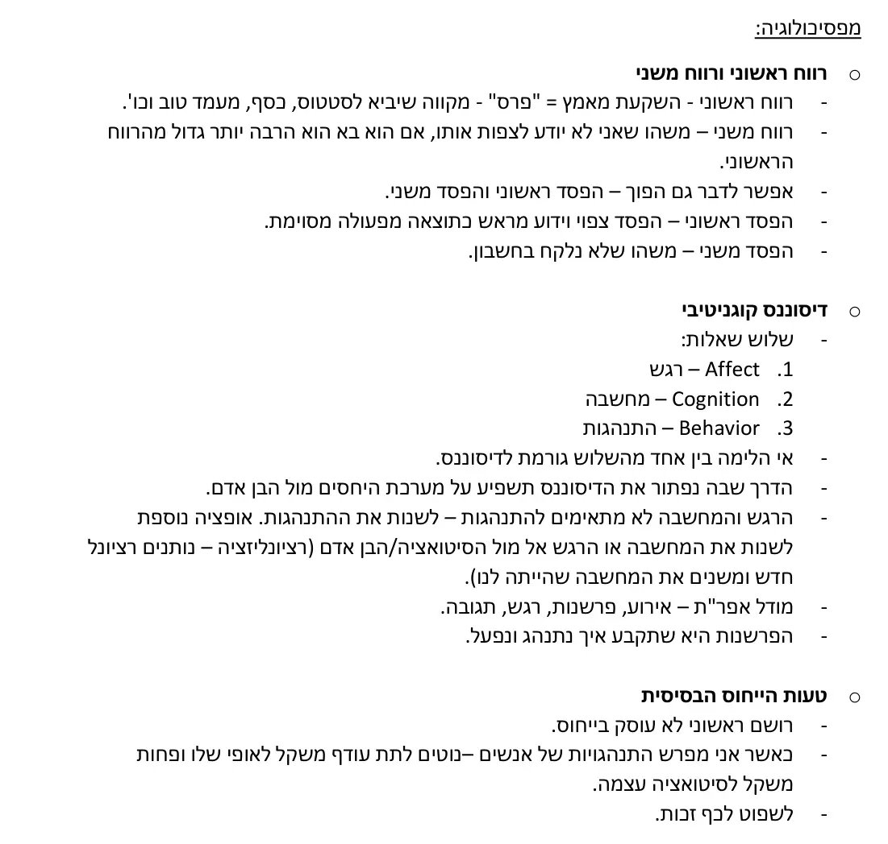
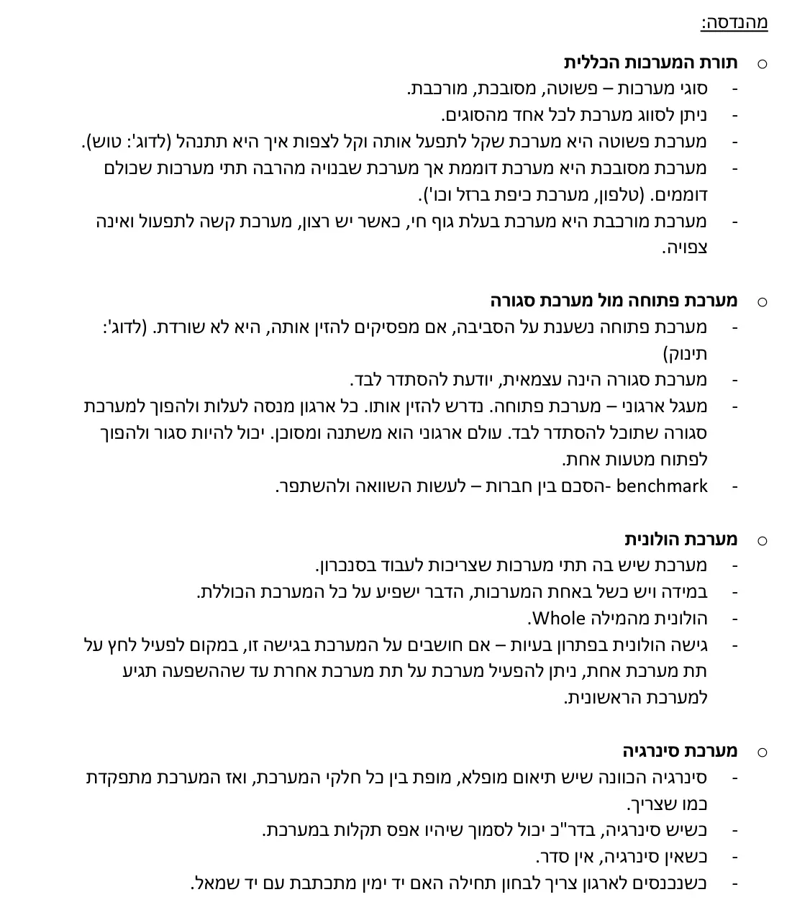
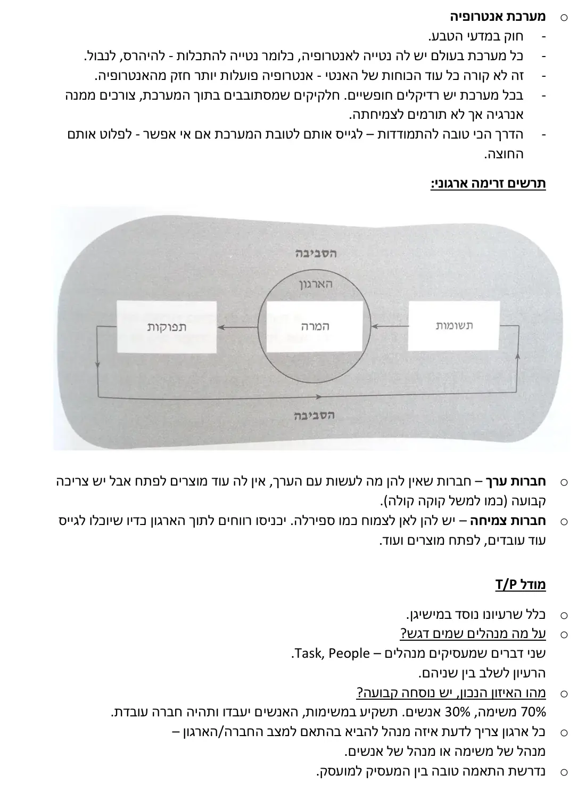
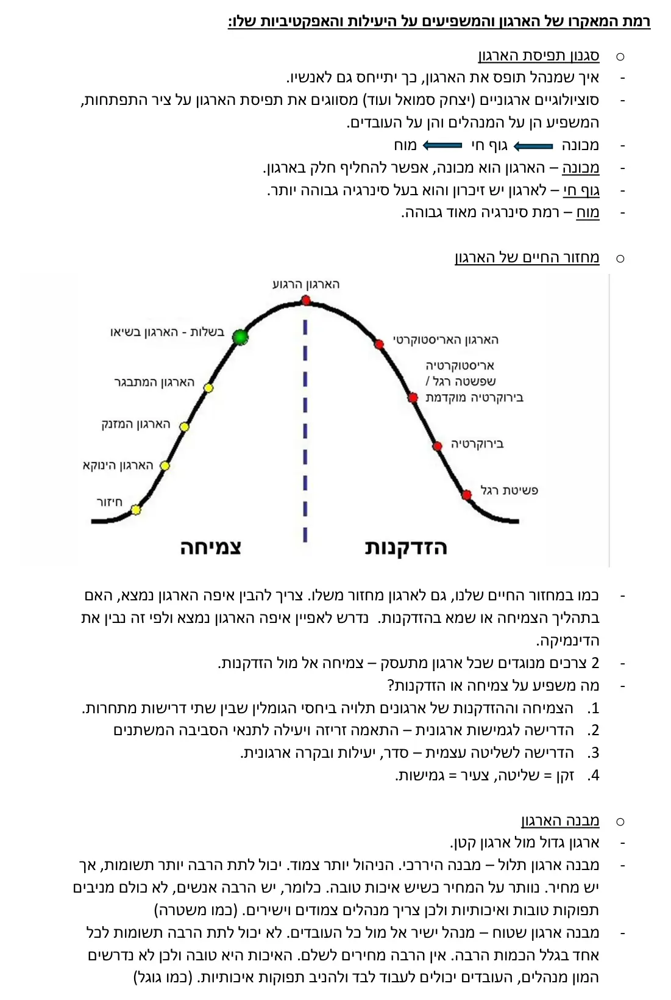
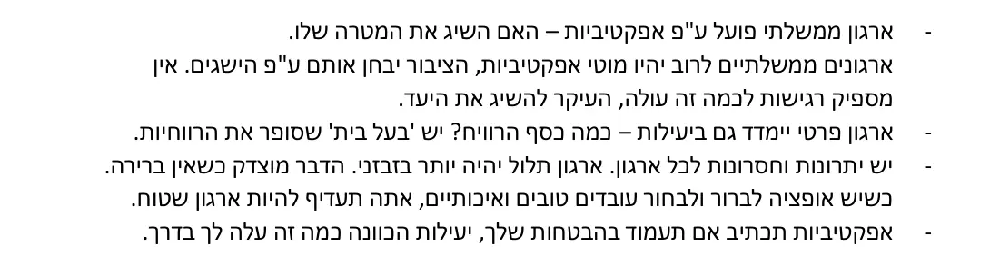
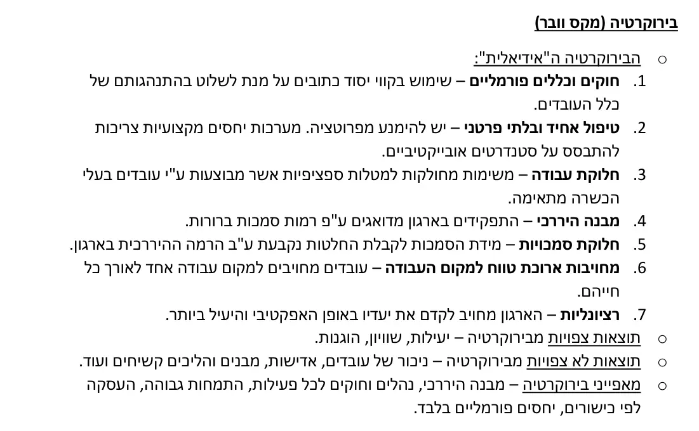
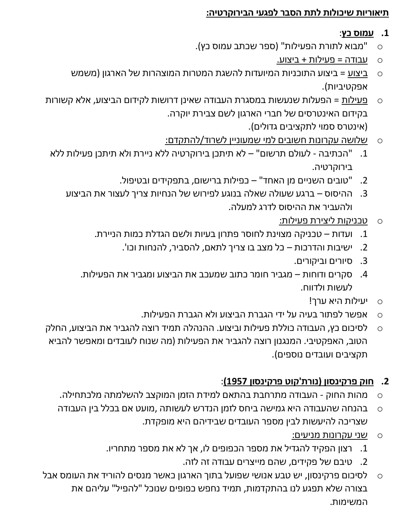
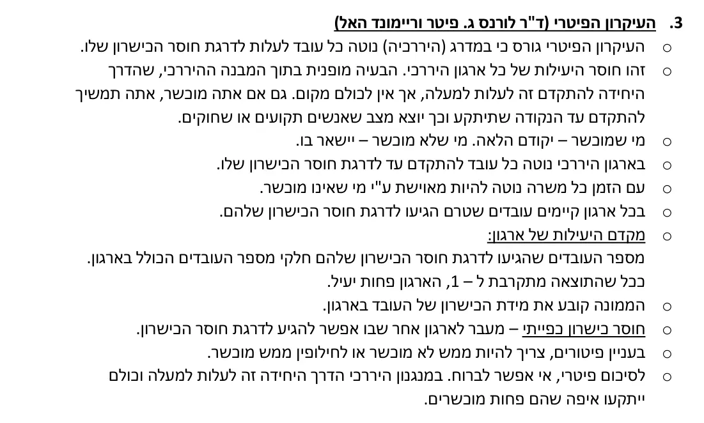
התנהגות ארגונית א' – שיעור 5
שיטות ניהול ישנות מול שיטות ניהול חדשות:
ניהול מדעי – (Scientific Management):
פרדריק טיילור סבר כי יש ליישם את הגישה המדעית בתחומי הניהול והייצור, כלומר לקח את המדע וגייס אותו לתעשייה.
נדרש לבצע תצפית ומדידה – וכך על סמך נתונים נוכל לקחת החלטות מושכלות יותר.
משהו לא צפוי שקורה בניסוי – נקרא רעש. חוקר יכול לתצפת על אותו רעש ולהפוך ניסוי לאחר בהתאם לממצאים שמקבל (כמו מה שקרה בגילוי אנטיביוטיקה).
חוקר טוב הוא חוקר שמתצפת, לוקח תופעה ששווה לבדוק אותה ומודד.
עקרונות הניהול המדעי:
מנהלים צריכים להיות אחראיים על ארגון העבודה כולה. להשאיר בידי העובד רק את החלק הביצועי. (מנהל שעובד לפי השיטה של טיילור, לא ירצה לדוג' הצעות לייעול מהעובד שלו).
מנהלים צריכים להיות מומחים בעבודתם של כפיפיהם.
שימוש בשיטות מדעיות על מנת למדוד ולקבוע את הדרך לבצע כל מטלת עבודה (ניתוח זמן ותנועה).
לבחור את האדם המתאים ביותר לביצוע התפקיד.
יש להכשיר את העובד לבצע את תפקידו כהלכה.
לעקוב אחר תפקוד העובדים על מנת לוודא שהביצוע כמצופה ולדאוג להעלמת הסחות ומכשולים.
לתגמל עובדים בשכר דיפרנציאלי ולא בשכר שווה וגלובאלי. מי שטוב – יקבל יותר וכך יהיה להם תמריץ תמידי להשתפר.
בדיקות שעשו אל מול העקרון של טיילור:
הנרי פורד (1863-1947) – "כשאתם מגיעים לעבודה, תחנו את המוח בחוץ". מסכים עם טיילור.
ניסויי הות'ורן (1927-1932) - חברת החשמל המערבית לציוד חשמלי הרכיבה מכשירי טלפון וסיפקה אותם לחברת האם שלה – בל.
הניסוי הראשון בוצע על קבוצה של חמש פועלות אשר הופרדו לצורך המחקר מן המחלקה שעבדו בה.
מחקרים אלו באו מכיוון טיילוריסטי והמשיכו מחקר קודם שבדק את השפעתם של גורמים שונים על תהליך הייצור והתפוקה כגון: טמפרטורה, לחות, זמני מנוחה וכו'.
ההשערות היו ששינוי בתנאים הפיזיים ישפיע לטובה או לרעה על תפוקת העובדות לפי כיוון השינוי.
תוצאות – הביאו למונח אפקט הות'ורן. התברר כי בלי קשר לשינויים שהונהגו, גדלה התפוקה כל הזמן ועמה מורל העובדות.
היו אצלן פחות היעדרויות, יותר שביעות רצון מהעבודה והחברות, גילו נכונות שהלכה וגדלה לעזרה הדדית וקיימו מפגשים חברתיים גם לאחר שעות העבודה.
ניסוי זה היה נגד העיקרון של טיילור.
מלאכתו של טיילור "חיה ובועטת" עד היום... שכר דיפרנציאלי, תנאים אופטימליים ועוד.
סגנונות ניהול:
משתף (דמוקרטי) אל מול קובע עצמאית (סמכותני).
קורט לוין ושות' – בדקו שלושה סגנונות:
סמכותי - מחליט לבד, חילק הוראות לילדים ולא השתתף בפעילות הקבוצה.
דמוקרטי – עודד את הקבוצה לתכנן יחד איתו ולהגיע להחלטה משותפת, נטל חלק בפעולות הקבוצה.
לא מתערב, שב והנח - העניק לילדים חופש מלא לתכנן ולהחליט בעצמם, מיעט להשתתף בפעילותם.
תוצאות הניסוי במילות המרצה:
אם אתה רוצה תפוקות בזמן הקצר ואין לך ברירה אתה צריך להיות סמכותני ונעים כמובן.
המחיר – להשקיע בטיפוח, לטפל באקלים תוקפני וכו'.
אם יש זמן – אתה יכול לעשות את זה בצורה דמוקרטית וכך לקבל עובדים מעורבים ובעלי דעות.
The Human Side of Enterprise (דאגלס מקגרגור, 1960):
לימד בMIT וקידם את אסכולת יחסי האנוש.
כבר משם סיפרו שניתן לראות מהו הדגש שמקגרגור מבקש לשים בפנייתו אל מנהלים וראשי מפעלים/ארגונים.
למרות העדפתו הברורה של מקגרגור בתיאוריה Y ניתן לראות כי עדיין קיימים מנהלים רבים המתנהגים לפי תיאוריה X, וייתכן כי עם עובדים מסוימים או בתחומי תעשייה שונים, יש עדיין מקום לפעול על פיה.
דאגלס מקגרגור – תיאוריה X ותיאוריה Y
שיטה דמוקרטית יותר.
תאוריה X (מסורתית) – תקופה שבה המהפכה התעשייתית פעלה והתחילו להעסיק יותר אנשים. התאגיד מקדם אג'נדה אבל העובד עושה משהו קטן ופשוט, אין מוטיבציה למעט המשכורת.
תאוריה שאומרת שאנשים עצלנים מטבעם. גישה של חוסר אמון. תמיד צריך לבדוק את העובדים.
תאוריה Y (מודרנית) – לאנשים יש צרכים וחלק מהם זה מימוש עצמי. הגישה כולה אומרת כי יש עניין גבוה בעבודה, אחרת העובד היה הולך. הארגון עוזר לך להגשים את עצמך. הגישה מקבלת ומקדמת. המנהל צריך להעצים את העובדים שלו, הם יעבדו טוב כשהוא ייתן הכרה וכלים לעבוד איתם.
לסיכום:
טיילור – מדעי. ליצור תצפית ומדידה על העובדים כדי שתדע לנהל כמו שצריך ולתמרץ בשכר דיפרנציאלי.
קורט לוין – סמכותני מול דמוקרטי. להשתמש בשיטה לפי טווח זמנים שיש לך.
X וY – מסורתי אל מול מודרני.
כאן נגמר הסיכום. השיעור הבא יתווסף כאן כשהסיכום יעלה.